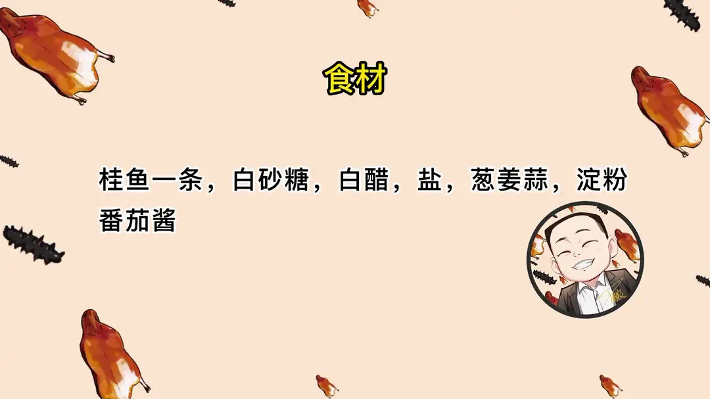
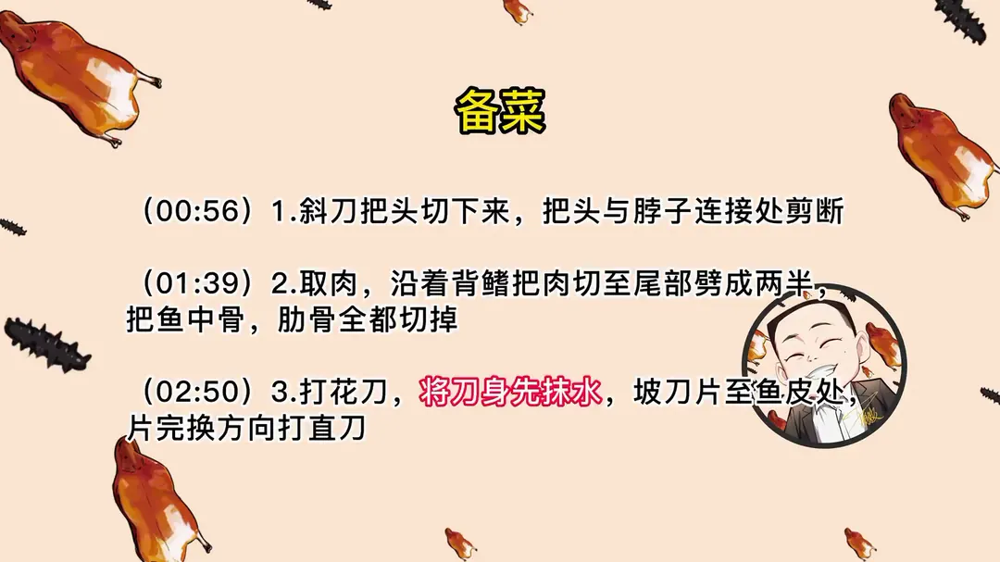
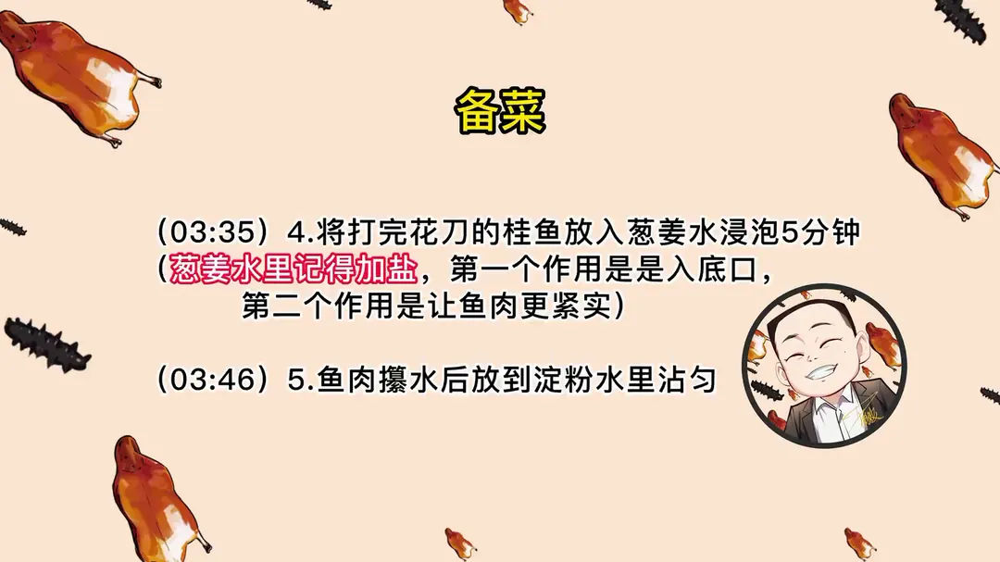
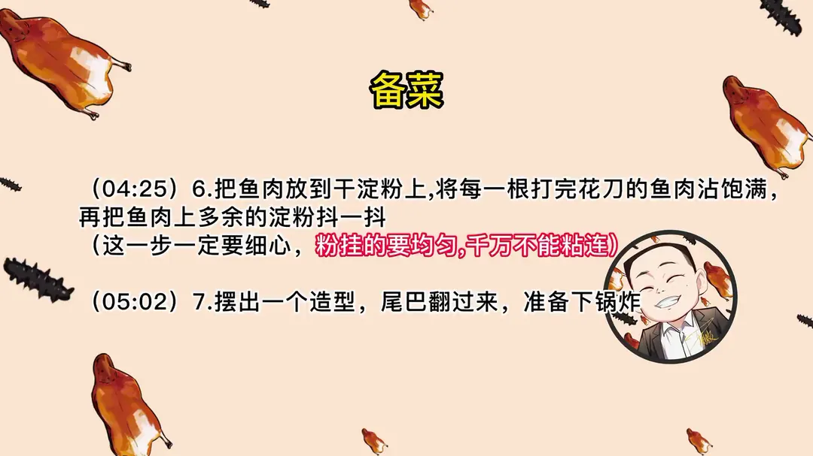
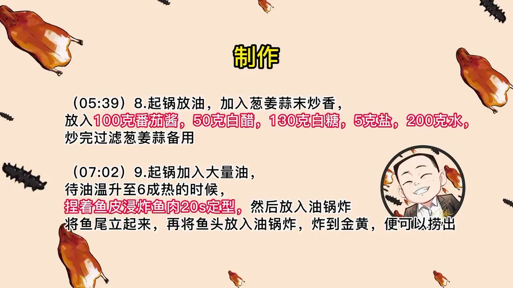
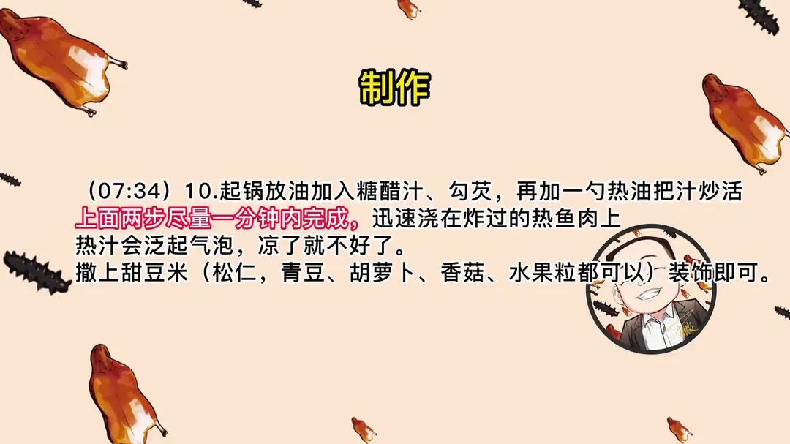

松鼠桂鱼
隋卞一做。桂鱼一条，取肉打花刀后挂淀粉，捏着鱼皮浸炸定型再整条炸至金黄，浇上用 100g 番茄酱、130g 白糖、50g 白醋调的热糖醋汁。
原视频：https://www.bilibili.com/video/BV1ZL411Z7SE
食材
桂鱼、白砂糖、白醋 等 7 样
| 类别 | 用料 | 用量 |
|---|---|---|
| 主料 | 桂鱼 | 一条 |
| 调料 | 番茄酱 | 100g |
| 调料 | 白砂糖 | 130g |
| 调料 | 白醋 | 50g |
| 调料 | 盐 | 5g |
| 调料 | 葱姜蒜 | 适量 |
| 挂粉 | 淀粉 | 适量 |
步骤
- 切头：斜刀把头切下来，把头与脖子连接处剪断。
- 取肉：沿着背鳍把肉切至尾部劈成两半，把鱼中骨、肋骨全部切掉。
- 打花刀：刀身先抹水，坡刀片至鱼皮处，片完换方向打直刀。
- 泡葱姜水：打完花刀的桂鱼放入葱姜水浸泡 5 分钟，葱姜水里记得加盐，一是入底口，二是让鱼肉更紧实。
- 拍粉：鱼肉擦水后放到淀粉水里沾匀，再放到干淀粉上，把每一根打过花刀的鱼肉沾满，抖掉多余的淀粉；粉要挂得均匀，千万不能粘连。
- 摆型：摆出一个造型，尾巴翻过来，准备下锅炸。
- 炸鱼：起锅加大量油，油温升至六成热，捏着鱼皮浸炸鱼肉 20 秒定型，再放入油锅炸，将鱼尾立起来，接着把鱼头放入油锅炸，炸到金黄便可捞出。
- 熬糖醋汁：起锅放油，加葱姜蒜末炒香，放入 100g 番茄酱、50g 白醋、130g 白糖、5g 盐、200g 水，炒完过滤葱姜蒜备用。
- 浇汁：起锅放油加入糖醋汁、勾芡，再加一勺热油把汁炒活，上面两步尽量一分钟内完成，迅速浇在炸过的热鱼肉上，热汁会泛起气泡；撒上甜豆米装饰，松仁、青豆、胡萝卜、香菇、水果粒都可以。
讲解要点
难度：★★★★☆（难点在打花刀和拍粉：刀要片到鱼皮而不切破，每一根鱼肉都要挂满粉）
为什么这么做
- 买冰鲜而不用活鱼：活鱼皮伸缩性强，下锅容易散开、形状不好定；刚死的冰鲜鱼身硬挺，炸出来造型更稳。
- 先斩断脖骨、把头切下来：头不断开，炸的时候整个鱼身会被牵着变形；分开处理，头和身都能摆成任意造型。
- 打花刀时刀身抹水：不抹水刀片黏不住鱼肉，根本片不进去。
- 先泡葱姜盐水：一是入底味，二是盐让鱼肉收缩紧实，炸完不会散。
- 淀粉水加干淀粉两遍挂粉：只蘸干粉或加蛋清、全蛋，表面粉层都太薄；先过一遍略稠于米汤的淀粉水再拍干粉，粉层才有厚度，炸完才酥。
- 热汁浇热鱼：鱼肉炸后表面近乎半透明，趁热浇才能挂住汁；鱼一凉就挂不上，只会在表面糊一层。
- 糖醋汁快炒快出：用铁锅久炒，番茄的酸会把锅锈咬下来，汁色发暗。
- 熬好汁要过滤：去掉葱姜蒜渣，成品才干净好看。
容易翻车
- 背鳍的刺有毒，处理时要小心扎手。
- 花刀片到鱼皮为止，千万别切断。
- 粉要一根根挂满、抖掉多余，不能有粘连。
- 炸鱼油要宽，油少鱼浮不起来、容易粘底。
- 炸鱼到浇汁尽量一分钟内完成，迟了挂不上汁。
原片尾卡






原片文案
AI 字幕校准稿
松鼠桂鱼咱们也吃了不少了。先看视频：有的进嘴后软塌塌的，没有口感；有的酥脆度差；有的糖醋汁的味道那么呛人；有的口味特别柔和。今天跟你们玩个狠活儿，我压箱底的绝活之一——北京饭店版本的松鼠桂鱼。
这个菜在外边卖，反正都不便宜。你把这菜学会了，至少能省个一两百一个菜，当然一个菜一桌菜，你都学会了，得省大几千了。先准备一条桂鱼。家里人买做松鼠桂鱼，买冰鲜的就行：早上你去菜市场，看看大师刚死的那个，买那个就行，不用买鲜活的，鲜活的还不如那个刚死的，很好用。
处理桂鱼的时候，千万千万要注意背鳍这个刺儿，它是具有一定毒性的，如果一不留神被它扎住了，赶紧挤血。桂鱼在腮后边这斜刀把头切下来，用力把脊骨斩断，要把下面这个脚（脖骨）也砍下来。这一步的目的是啥？别着急，我跟你讲：我们炸桂鱼的时候，上面不砍下来，炸完之后它会变形；这样炸完，你怎么摆弄它都行，这个形状才能最好看。
很多师傅炸了桂鱼之后，头那个造型摆不太好，这一步很关键。取肉从背鳍这切一刀拉进去，顺着背骨往前拉，把它剔下来。然后把它翻过来，刀斜着下去平推，把中骨去掉；去掉肋骨，到下边直接切就行了。看，是个长条，保持中间全都是两块很厚的鱼肉就可以了。
原来参加比赛的时候，都会把鱼肉下冰箱冷却，切完之后会有筷子头粗细的细丝，拍干粉炸完以后全都支棱着，特别整齐，特别像松鼠的毛。咱们教家庭版的，就用鲜鱼了。然后开始打花刀，一定要刀身上抹水，不抹水不滑溜。先坡刀片到鱼皮，片一片掀起一片，能看到片到哪儿；到尾部的时候一定要注意。换个方向打直刀，也深至鱼皮——切的时候刀往旁边歪一下，就能看得见是不是切到鱼皮了，一定要下刀，千万别切断。花刀打成这个样子就行了。
把鱼肉放进加了盐的葱姜水里，它可以增加肉的紧实度，入一个底味。调一个淀粉水，比米汤稍微稠一点。鱼肉攥净水，然后放到淀粉水里——很关键的一步：有的师傅放蛋清，有的放全蛋，有的不放，直接蘸。我全都实验过了，只有这样蘸完之后，鱼肉表面的淀粉才能达到一定厚度，炸完会更酥脆；加蛋清、加全蛋或者什么都不加的，酥脆程度都不如这个，童叟无欺，你回去试。然后放到干淀粉上面，把每一根打完花刀的鱼肉蘸得很饱满，避免有粘连的部分。打花刀的肉掉个一两根是正常的，掉几根也正常，别全掉干净了就不正常了。
这我曾经有一年为了练松鼠鱼，一天至少做五条桂鱼，天天做，给我们那帮同事都吃坏了。然后把鱼肉上面多余的淀粉抖一抖，要摆出一个造型，准备下锅炸。尾巴顺着翻过去，捏住两块鱼皮沾点水，让它鱼皮也沾上，造型更好看一些。活鱼的鱼皮伸缩性比较强，下锅很容易散开，你也得稍微紧实一些。鱼头拍好了，咱们准备上锅。
锅里放干净油，把葱姜蒜末放进去炒香，放番茄酱炒香，加白醋、加水，比例不用记，我会打到视频的后方；再加白糖和盐。这汁儿是大酸甜。用铁锅炒糖醋汁儿得快炒快出，时间长了番茄的酸会把锅上的锈拿掉，你这个番茄汁就会色重。番茄汁熬到这种程度就可以了，为了好看美观，把渣子滤掉。
倒入干净油，油得宽一点，油不宽鱼在里边不飘，容易粘底。把鱼下去炸，捏着两端，用铲子规制一下，稍微定一下型，然后把尾巴立起来；鱼头搁旁边炸一下。炸得差不多之后捞出来。锅热放点油，把汁放进去，慢慢往里勾芡。鱼肉搁锅里回一下，然后装在盘里，来一勺热油把汁炒和了，迅速浇汁，撒上蜜豆。
有师傅曾经教过一个手法：把鱼肉捞出，把油倒出，酱汁往里一浇，绝对在一分钟之内；时间一长，鱼肉只要一凉就挂不上汁。你现在近距离看，他那鱼肉有点近似半透明的状态，所以要不是热鱼的时候浇上汁，它就挂不上，一凉绝对不行。首先他这个酥度是我吃过最酥的；然后糖醋的比例没得说，酸也不冲，甜也不腻，咸度也刚刚好。外面很酥的那个壳，配上这汁，特别好吃。